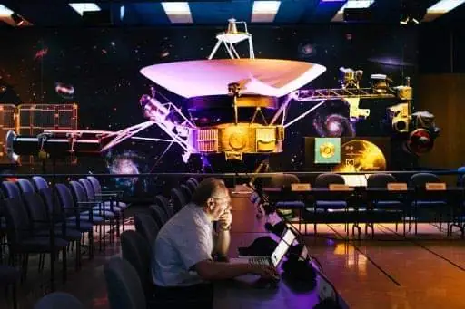

Science news ·
42 years since the start of the historic Voyager missions
Eng. Majed Abu Zahra: in September 2019 NASA's Voyager 1 and 2 complete 42 years of operation, the most distant and longest-lived space missions.
This post is in Arabic; the title and summary above are translated. The original text follows.
إعداد: م. ماجد أبو زاهرة

يحقق المسباران “فوياجر 1” و“فوياجر 2” التابعان لوكالة الفضاء ناسا، 42 عاما من التشغيل والاستكشاف في شهر سبتمبر هذا العام 2019 وبذلك تعتبر أبعد وأطول المهمات الفضائية، وعلى الرغم من المسافة الشاسعة التي تفصلنا عن المسبارين فإنهما يتواصلان مع وكالة ناسا بشكل يومي.
إن قصة المسبارين لم تؤثر فقط على أجيال من العلماء والمهندسين الحاليين والمستقبليين بل أيضا على ثقافة الأرض.
لقد حقق المسباران أرقاما قياسية في رحلات الفضاء لا مثيل لها فالمسبار “فوياجر 2” الذي أطلق في 20 أغسطس 1977 أصبح المركبة الفضائية الوحيدة التي حلقت بالقرب من الكواكب الأربعة الخارجية المشتري، زحل، أورانوس، نبتون، وشملت اكتشافاتها أول نشاط بركاني خارج الكرة الأرضية على قمر المشتري ”آيو“، وإمكانية وجود محيط مائي تحت سطح قمر المشتري ”أوروبا“، واكتشاف غلاف جوي يشبه الغلاف الجوي للأرض حول قمر زحل ” تيتان “، والقمر الجليدي “ميرندا” حول أورانوس، واكتشاف تدفقات لنفاثات باردة على ” ترايتون ” أحد أقمار نبتون.
وعلى الرغم من أن المسبار “فوياجر 1” ترك الكواكب خلفه الآن وسوف يمر بالقرب من نجم آخر بعد حوالي 40 ألف سنة، إلا أن المسبارين حتى الآن يقومان بإرسال بيانات حول الظروف التي ينخفض فيها تأثير الشمس ويبدأ الفضاء بين النجوم.
المسبار “فوياجر 1 ” الآن يبعد عن الأرض مسافة أكثر من 13 مليار ميل ويتحرك خلال الفضاء بين النجوم باتجاه شمال مستوى دوران الكواكب حول الشمس.
وقد كشف ” فوياجر 1 ” بأن الأشعة الكونية، النوى الذرية تتسارع إلى ما يقرب من سرعة الضوء وهي وفيرة في الفضاء بين النجوم أكثر من أربعة أضعاف مقارنة بالقرب من الأرض، وهذا يعني بأن طبقة “الهيليوسفير”، وهي فقاعة مغناطيسية ضخمة تحيط بنظامنا الشمسي تعمل بشكل فعال كدرع حماية للكواكب من الإشعاع، وأشار “فوياجر 1” إلى أن المجال المغناطيسي للفضاء المتوسط يلتف حول الهيليوسفير.
أما بالنسبة للمسبار “فوياجر 2 ” فهو يبعد عن الأرض الآن أكثر من 11 مليار ميل وهو يتحرك جنوب النظام الشمسي وقد دخل إلى الفضاء بين النجوم في 2018.
إن المواقع المختلفة للمسبارين فوياجر 1 و 2 تسمح بإجراء مقارنة تلك المناطق في الفضاء حيث الهيليوسفير تتفاعل مع الفضاء الذي يحيط بها وذلك باستخدام أجهزة لقياس الجسيمات المشحونة، والمجالات المغناطيسية وتردد موجات الراديو المنخفضة وبلازما الريح الشمسية. وبعد أن دخلت “فوياجر 2” إلى الفضاء بين النجوم أصبحت أيضا قادرة على إجراء مقارنة لاثنين من المواقع المختلفة في وقت وأحد.
إن المسبارين فوياجر 1 و 2 استمرا كل هذا الوقت الطويل في رحلتهما عبر الفضاء بفضل البصيرة لمصممي البعثة، حيث تم تجهيز المسبارين بحيث يكونان قادرين على تجاوز البيئة الإشعاعية القاسية لكوكب المشتري الأعنف بين جميع كواكب نظامنا الشمسي، وأيضا تم تجهيز المسبارين بشكل جيد لما بعد ذلك.
إن كلا المسبارين يحمل أجهزة إضافية تسمح لهما بالتبديل إلى أنظمة نسخ احتياطي بشكل أوتوماتيكي عند الضرورة فضلا عن إمدادات الطاقة الطويلة الأمد، فكل مسبار لديه ثلاث بطاريات للنظائر المشعة، وهي أجهزة تستخدم الطاقة الحرارية المتولدة عن التحلل من (البلوتونيوم -238) والذي يفقد نصفه فقط بعد 88 سنة.
من المعروف أن الفضاء تقريبا فراغ لذلك فإن مسابير فوياجر لا تواجه أي مستوى خطر للاصطدام بأجسام كبيرة ومع ذلك فإن الفضاء ما بين النجوم ليس فراغا تاما، فهو مليء بغيوم لمواد من بقايا انفجار النجوم في صورة مستعر أعظم ” سوبرنوفا ” منذ ملايين السنين الماضية، هذه المواد لا تشكل تهديدا للمسبارين ولكنها جزء أساسي للبيئة التي ستخضع للفحص لمساعدة العلماء لدراسة خصائصها.
ونظرا لانخفاض طاقة المسابير بمقدار 4 واط سنويا، يتعلم المهندسون كيفية تشغيل المركبات الفضائية في ظروف متنوعة ولتحقيق أقصى قدر لعمر مسابير فوياجر.
وبحسب تقديرات الفريق العلمي فإنهم سوف يضطرون إلى إيقاف آخر الأجهزة العلمية بحلول العام 2030 وينتهي التواصل معها إلى الأبد وتصبح ذاكرة رائعة في تاريخ استكشاف الفضاء، ومع ذلك وحتى بعد توقف التواصل معها سوف تستمر في مسارها بسرعتها الحالية التي تتجاوز 48,280 كيلومتر بالساعة
ما الذي حققه المسباران فوياجر 1 و 2 فيما يتعلق بالكواكب في نظامنا الشمسي؟
بعد إطلاقهما في عام 1977 ، جلبت مسابير فوياجر العديد من المفاجآت والاكتشافات بعد اقترابها من الكواكب الغازية العملاقة في نظامنا الشمسي: المشتري، زحل، أورانوس، نبتون، فيما بين 1977 و 1990 وهي:
1 – أول مركبة فضائية تحلق قرب كل الكواكب الأربعة الخارجية في نظامنا الشمسي (فوياجر 2)
2 – أول مهمة تكتشف عدة أقمار للكواكب الأربعة الخارجية ( كلا المركبتين)، ثلاثة أقمار جديدة للمشتري، أربعة أقمار جديدة لزحل، 11 قمرا جديدا لأورانوس، وستة أقمار جديدة لنبتون.
3 – أول مركبة فضائية تحلق قرب أربعة أهداف مختلفة كوكبية ( فوياجر 2).
4 – أول مركبة فضائية تزور أورانوس ونبتون ( فوياجر 2).
5- أول مركبة فضائية تقوم بتصوير حلقات المشتري وأورانوس ونبتون الخافتة ( فوياجر 2).
6 – أول مركبة فضائية تكتشف نشاطا بركانيا خارج الأرض على قمر المشتري ”آيو“ ( فوياجر 1)
7 – أول مركبة فضائية تكتشف ظاهرة البرق في مكان آخر غير الأرض على المشتري (فوياجر 1).
8 – أول مركبة فضائية تجد دلائل لوجود محيط مائي خارج الأرض على قمر المشتري أوروبا (كلا المسبارين).
9 – أول مركبة فضائية تكتشف غلافا جويا غنيا بالنيتروجين خارج الأرض حول قمر زحل ” تيتان ” ( فوياجر 1)
وماذا بعد ذلك؟
بعد أن تجاوز المسبار فوياجر 1 زحل في نوفمبر 1980 بدأ رحلته إلى حيث لم تذهب مركبة من صنع إنسان من قبل نحو الفضاء بين النجوم، وفي 25 أغسطس 2012 عبر إلى الفضاء بين النجوم وغادر حدود نظامنا الشمسي وترك خلفه “الهيليوسفير” وهي عبارة عن فقاعة مغناطيسية ضخمة تحيط بكامل النظام الشمسي
أما بالنسبة للمسبار فوياجر 2 فقد بدأ رحلته نحو الفضاء بين النجوم بعد تجاوزه كوكب نبتون في أغسطس 1989 ودخل الفضاء بين النجوم العام الماضي 2018 ، وسويا سوف يقومان بتعريف العلماء عن مدى تأثير الشمس وطبيعة الفضاء الذي يقع خلف الكواكب.
1 – أول مركبة فضائية تغادر الهيليوسفير وتدخل الفضاء بين النجوم (فوياجر 1).
2 – أول مركبة تقيس الكثافة الكلية للأشعة الكونية – ذرات تتسارع لسرعة تقترب من سرعة الضوء – في الفضاء بين النجوم (فوياجر 1).
3 – أول مركبة فضائية تقيس الحقل المغناطيسي في الفضاء بين النجوم ( فوياجر 1).
4 – أول مركبة فضائية تقيس كثافة الفضاء بين النجوم – مواد مقذوفة من انفجار المستعرات العظمى ” السوبر نوفا ” ( فوياجر 1).
5 – أول مركبة فضائية تقيس نهاية صدمة الريح الشمسية – وهو الحد حيث الجزيئات المشحونة للريح الشمسية تبطئ تحت سرعة الصوت عندما تنتقل إلى الفضاء المتوسط بين النجوم ( فوياجر 2).
من الناحية الهندسية بالنسبة للمسبارين:
1 – أولى المركبات الفضائية المحمية بشكل كبير ضد الإشعاع ونفس التقنية لا تزال تستخدم حتى اليوم في المهمات الحديثة.
2 – أولى المركبات الفضائية المحمية من التصريف الكهروستاتيكي الخارجي.
3 – أولى المركبات المزودة بحاسوب مبرمج للتحكم بالمهمة.
4 – أولى المركبات الفضائية المزودة بنظام حماية من الخطأ أوتوماتيكي، فالمركبات قادرة على اكتشاف مشاكلها بنفسها واتخاذ الإجراءات التصحيحية.
5 – أولى المركبات التي تستخدم رموز ” ريد- سولومون “– وهي عبارة عن خوارزميات لتقليل الأخطاء في نقل البيانات وتخزينها وهي تستخدم على نطاق واسع في وقتنا الحاضر.
6 – للمرة الأولى يقوم المهندسون بربط هوائيات الاتصالات الأرضية معا في مصفوفة لتكون قادرة على الحصول على مزيد من البيانات عند اقترابها من كوكب أورانوس.
حقيقة لم يكن أحد يعلم عندما تم إطلاق مسابير فوياجر قبل 42 سنة بأنها ستظل تعمل وتستمر في رحلتها الرائدة، والشيء الأكثر إثارة ربما قد يتحقق في السنوات الخمس المقبلة.
لمزيد من البيانات المباشرة من المسبارين:
https://voyager.jpl.nasa.gov/mission/status/